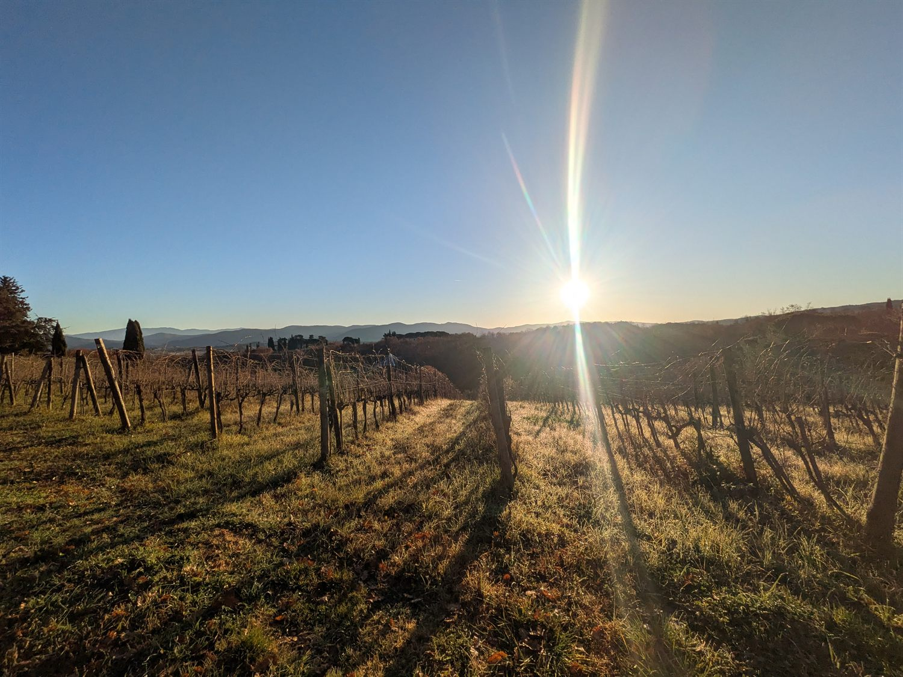
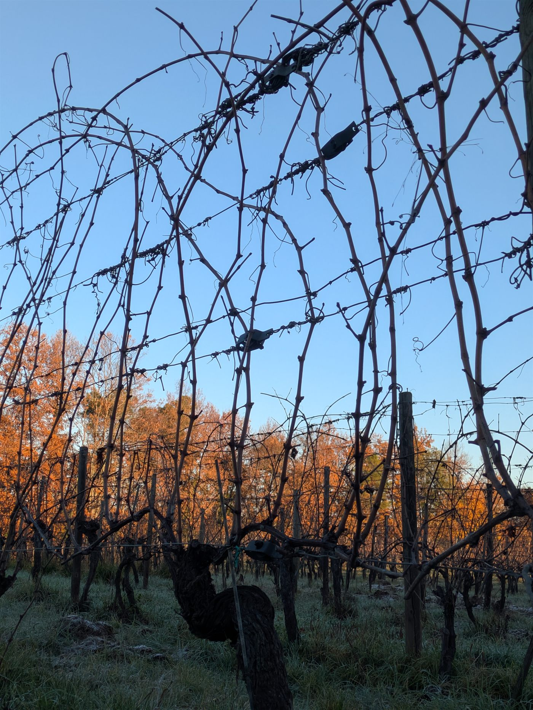
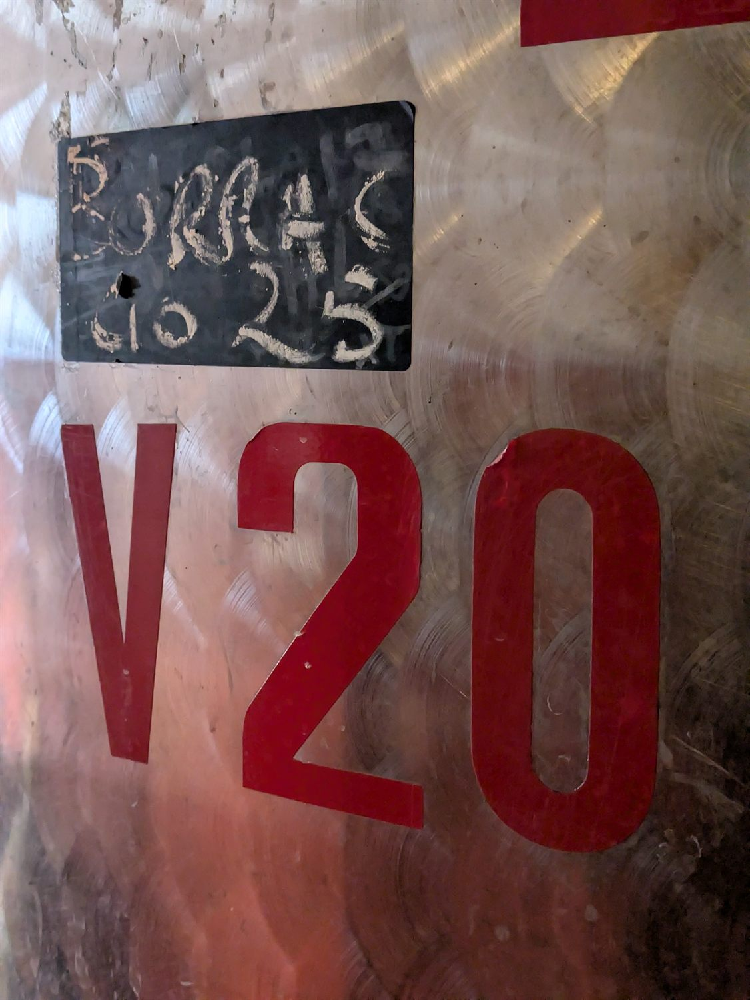
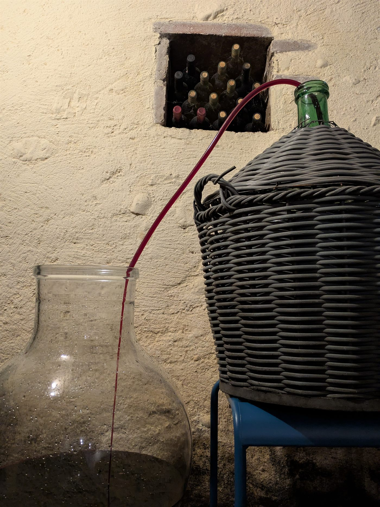
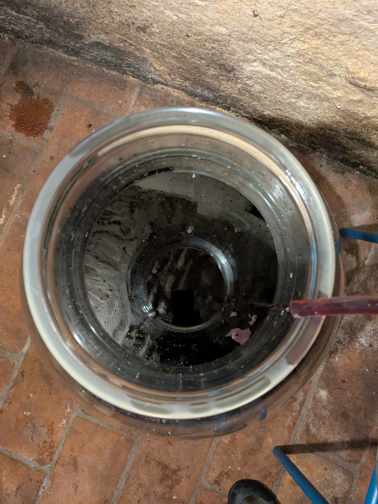
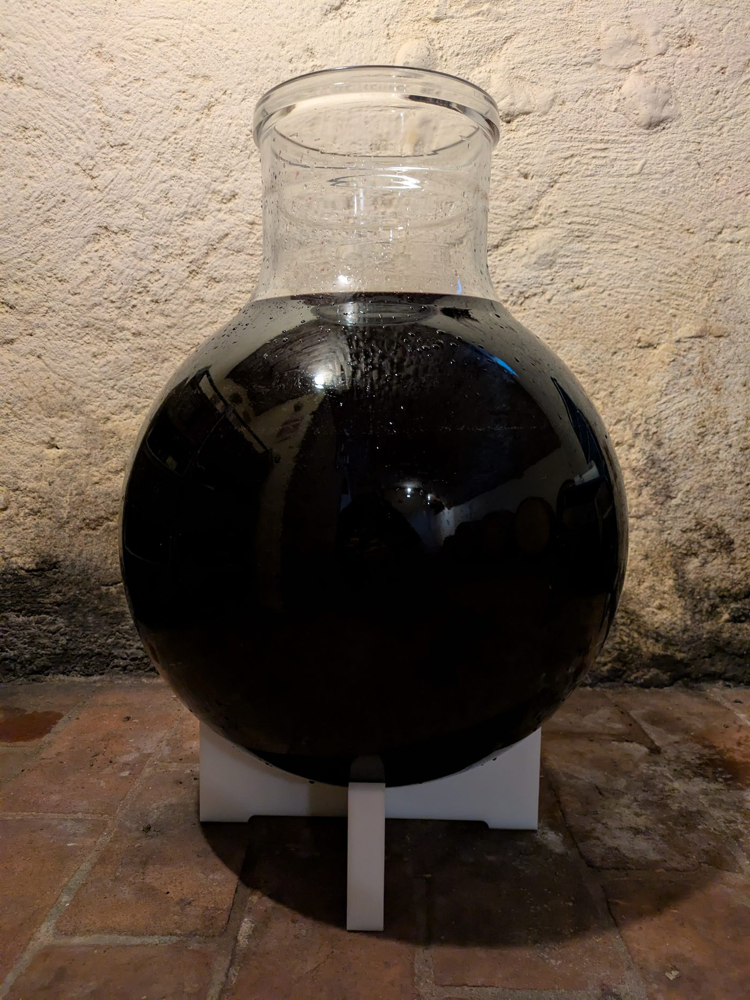
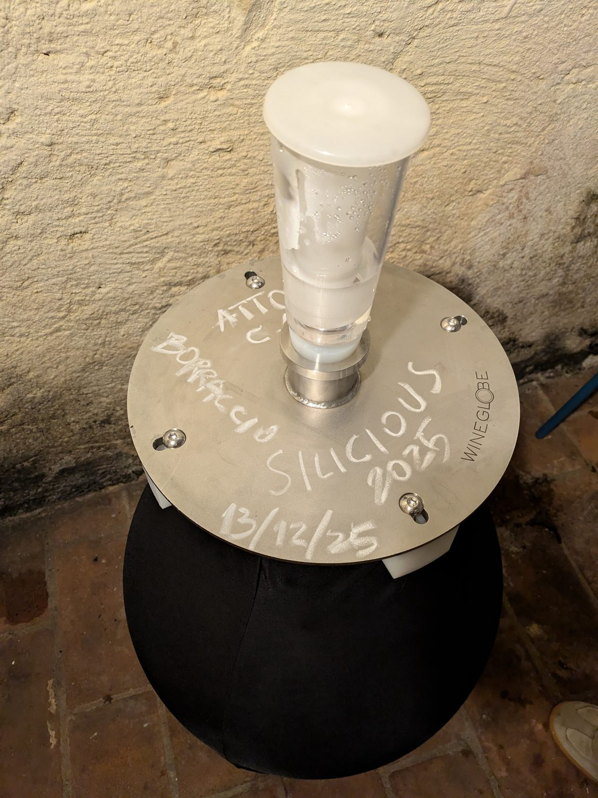
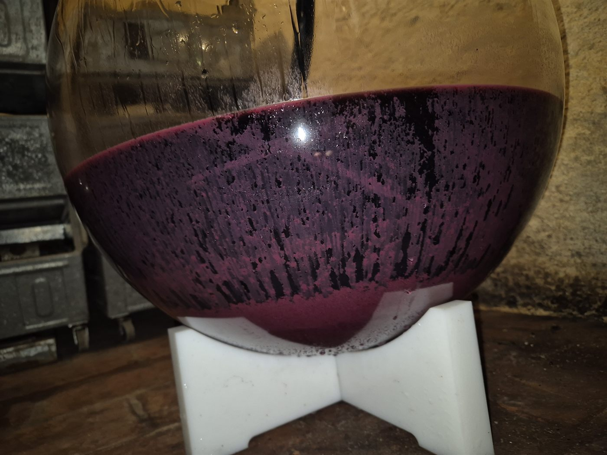

Messaggio n°1 · Chianti Classico 2025
Vigna del Borraccio
Fattoria Ispoli — Mercatale in Val di Pesa (FI). Sangiovese in purezza, da una parcella di 0,9 ettari su argille e calcare, in conduzione biologica storica.
L'ampolla è piena di vino dal primo giorno: quello che si riempie nel disegno è il tempo, non il liquido. Il livello indica quanta parte della fase in corso è già trascorsa.

Il vigneto
Identità e terroir
La Vigna del Borraccio rappresenta l'equilibrio tra una gestione agronomica di precisione e una dotazione naturale privilegiata.
- Localizzazione
- Versante occidentale della tenuta, esposizione Sud-Est con pendenza significativa.
- Superficie e densità
- 0,9 ettari per un totale di 5.400 ceppi, circa 6.000 piante per ettaro.
- Genetica
- Selezione paritetica di Sangiovese: cloni 2000/1, 2000/3 e 2000/4.
- Portainnesti
- Combinazione di 110R e 1103P, scelti per la resilienza e l'adattamento al suolo.
- Sistema di allevamento
- Cordone speronato monolaterale con quattro punti vegetativi per pianta.
- Pedologia
- Argilla marrone chiaro con abbondante presenza di rocce calcaree rotondeggianti. L'argilla garantisce una riserva idrica costante anche nelle annate siccitose.
- Filosofia agronomica
- Conduzione biologica storica, pionieristica per la zona, con elevata dotazione di sostanza organica e biodiversità resiliente.
Dove
La cantina che ospita il Messaggio
Il vino non si sposta: resta nella cantina in cui è nato per tutto l'affinamento. Il Messaggio n°1 è custodito a Fattoria Ispoli, azienda biologica certificata sulle colline di Mercatale, in Val di Pesa.
L'annata
2025: frutto e terra
Un'annata che ha saputo esaltare frutto e terra, offrendo uva perfettamente sana, dalla morfologia insolita e dalla qualità eccezionale.
- Andamento stagionale
- Stagione estremamente favorevole, senza gli eccessi tipici delle ultime annate. Piogge costanti e ben distribuite; le leggere ondate di caldo, una in particolare a giugno, non hanno condizionato la pianta.
- Morfologia del grappolo
- Grappoli spargoli con acini tendenti all'ovale e sanità perfetta.
- Maturazione
- Sincronia di maturazione non comune, favorita dalla riserva idrica del suolo argilloso, dall'escursione termica di settembre e da un perfetto equilibrio vegeto-produttivo.
- Vendemmia
- 27 settembre 2025, raccolta manuale.
- Resa selezionata
- 16 quintali destinati a Riserva e 20 quintali destinati a Chianti Classico, con selezione manuale.
L'annata nei numeri
Che tempo ha fatto sul Borraccio
Le osservazioni del vignaiolo raccontano come si è comportata la pianta. Questi sono invece i numeri della stagione, messi accanto alla media degli ultimi trent'anni sullo stesso punto.
La custodia
Il momento in cui il vino incontra il vetro
Il 13 dicembre 2025, con luna decrescente all'ultimo quarto, l'ampolla è stata riempita presso la Fattoria Ispoli. Da quel giorno il tempo inizia a scorrere lentamente.
- Data di inizio
- 13 dicembre 2025 (luna decrescente, ultimo quarto).
- Contenitore
- Ampolla di vetro Wineglobe da 60 litri.
- Vinificazione
- Sangiovese in purezza, vinificato secondo i protocolli di Fattoria Ispoli nel pieno rispetto dell'identità aziendale.
- Imbottigliamento
- Previsto per novembre 2026: diretto e senza filtrazione, in 39 magnum.
- Destinazione delle magnum
- Una resta a Fattoria Ispoli; le altre trentotto sono custodite dall'Associazione e destinate all'asta benefica.
- Obiettivo
- Custodire la voce della vigna e consegnarla al tempo, per la futura restituzione alla comunità.
13 dicembre 2025
Il giorno della custodia
La cronaca di una giornata cominciata all'alba nella vigna e finita con un'ampolla piena, sigillata e firmata a mano.






Alla degustazione
Scheda di degustazione

La restituzione
Che cosa succederà a queste magnum
Dopo almeno tre anni di riposo si celebra l'evento conclusivo dedicato al Messaggio. Delle trentanove magnum una resta a Fattoria Ispoli, le altre trentotto vengono battute in un'asta benefica; la serata si apre stappandone una per la degustazione collettiva.
Il ricavato confluisce nell'Associazione e sostiene un progetto scelto insieme all'azienda ospitante: tutela del paesaggio, rigenerazione ambientale o inclusione sociale. Il progetto legato a questo Messaggio verrà pubblicato qui non appena deliberato.